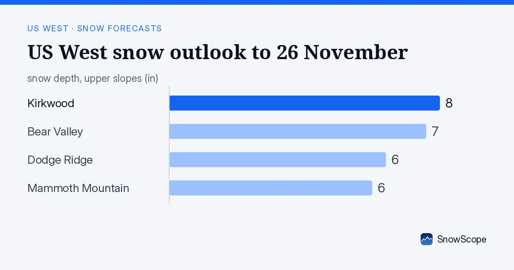
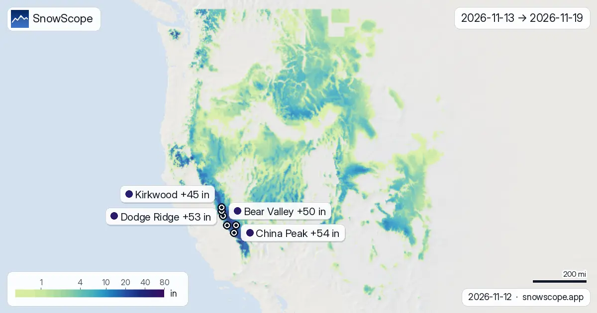
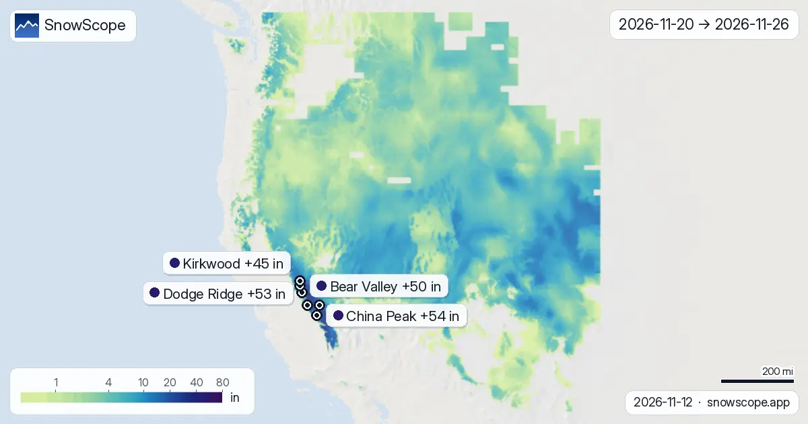

When's the next snow in US West? Saturday brings 11 in (27 cm)
US West's first big snow of the season is forecast for Saturday, November 14, with up to 11 in (27 cm) possible on the highest peaks. That day, 56 ski resorts across the region should receive 2 in (5 cm) or more, marking the start of a busy snow week.
See the live snow forecast for China Peak in the SnowScope appSnow depth, powder alerts and the 3D map, free.
Saturday's main event and beyond
Saturday, November 14 is your main snow event of the coming week. The Forecasts show a band of snow moving into the central Sierra Nevada mountains this weekend, with the highest peaks and ridges taking the most accumulation. China Peak could reach 11 in (27 cm)—the peak of this event. This is early-season snow, light and airy; expect rapid settling as ground temperatures are still warm. Friday, November 13, will stay mostly dry across the region. After Saturday, there's a quiet spell on Sunday. Then activity resumes on Tuesday through Thursday, with November 18 standing out as another busy day that could bring snow to 93 resorts.
| Resort | Snow depth | New snow, 72 h | Coming, next days | Top |
|---|---|---|---|---|
| China Peak | 0 in (0 cm) | 0 in (0 cm) | 14 in (35 cm) | 8,629 ft (2,630 m) |
| Dodge Ridge | 6 in (16 cm) | 0 in (0 cm) | 12 in (30 cm) | 8,143 ft (2,482 m) |
| Bear Valley | 7 in (19 cm) | 0 in (0 cm) | 15 in (39 cm) | 8,484 ft (2,586 m) |
| Badger Pass | 0 in (0 cm) | 0 in (0 cm) | 10 in (25 cm) | 7,795 ft (2,376 m) |
| Mammoth Mountain | 6 in (15 cm) | 0 in (0 cm) | 9 in (24 cm) | 11,024 ft (3,360 m) |
| Kirkwood | 8 in (20 cm) | 0 in (0 cm) | 16 in (40 cm) | 9,462 ft (2,884 m) |

Elevation is key to early-season snow
In mountains like these, elevation is everything early in the season. At 3,281–4,921 ft (1,000–1,500 m), expect just 2 in (6 cm) of new snow over the full two weeks. Jump to 6,562–8,202 ft (2,000–2,500 m) and that rises to 7 in (17 cm). Above 8,202 ft (2,500 m), the median forecast is 11 in (27 cm); highest zones above 9,843 ft (3,000 m) reach 13 in (33 cm). This elevation dependence is why the best skiing early season is at mid-mountain elevations and higher. Lower slopes will be thin, with rocks and obstacles showing through.

Two different patterns in the two weeks
The forecast splits into two distinct patterns across the two weeks. Week 1 (November 13–19) concentrates the activity, with snow on Saturday the 14th and again mid-week—this period holds about 31 per cent of the total two-week snow forecast. Week 2 (November 20–26) spreads its snow more thinly across the days, with heavier falls arriving on November 20 and again near the end, around November 26. Early-week snow will come in sharper bursts; later-week snow will be steadier but lighter on individual days.

Which resorts get the most snow
Three resorts lead the two-week forecast. Dodge Ridge and Bear Valley forecast similar amounts—53 in (135 cm) and 50 in (128 cm) respectively. All three peak on Saturday, November 14. The mid-week day of November 18 brings a second significant snow push; Mt. Shasta Ski Park reaches 9 in (22 cm) on that day. By November 15, 135 resorts across the region should have some measurable snow cover—that's 69 per cent of all tracked resorts.
What to expect from early-season snow
Remember: this is a forecast, and actual totals will vary, especially with early-season snow that falls light and compresses quickly under its own weight. Ground still holds heat from autumn, so lower elevations may see the precipitation as wet slush rather than dry powder. Rocks and terrain hazards will show through thin snow at mid-mountain zones—part of the early-season reality. Check the official avalanche bulletin before heading off-piste, since thin snow can hide obstacles and thin coverage can hide avalanche hazards. The safest strategy is to focus on runs above 8,202 ft (2,500 m) where new depth reaches 11 in (27 cm) or more. Early-season freeze-thaw cycles matter more now than they will later in winter.
Tips for skiers
- Saturday November 14 is your best chance for new powder this week; expect 2–11 in (5–27 cm) depending on elevation
- Plan runs above 8,202 ft (2,500 m) for the deepest snow; lower elevations will be thin with rocks showing
- Mid-week snow arrives again November 18; track that day as a secondary powder day
- Check the official avalanche bulletin if you venture off-piste; thin early-season snow can hide hazards and terrain obstacles
- Watch freeze-thaw cycles this early in the season; overnight temperatures will determine whether snow sets hard or remains creamy
About these numbers
Resort snow depths are the deepest snow on the resort's upper slopes on the date shown; they are estimates for an area, not a measurement at one point. Forecasts can change. Always read the official avalanche bulletin before going off-piste.
Official avalanche bulletins: avalanche.org
Cite this report
For research, teaching or the press: the numbers and charts are free to reuse under CC BY 4.0 with this citation.
SnowScope (2026), When's the next snow in US West? Saturday brings 11 in (27 cm), https://snowscope.app/blog/en/2026/11/us-west-2-week-snow-forecast-maps-12-november-2026.html, accessed 2026-11-12
SnowScope (Atlas Labs). (2026, November 12). When's the next snow in US West? Saturday brings 11 in (27 cm). SnowScope snow reports. https://snowscope.app/blog/en/2026/11/us-west-2-week-snow-forecast-maps-12-november-2026.html
BibTeX
@misc{snowscope2026uswest2weeksnowforecastm,
author = {{SnowScope (Atlas Labs)}},
title = {When's the next snow in US West? Saturday brings 11 in (27 cm)},
year = {2026},
month = nov,
howpublished = {\url{https://snowscope.app/blog/en/2026/11/us-west-2-week-snow-forecast-maps-12-november-2026.html}},
note = {Published 2026-11-12 18:20 UTC; accessed 2026-11-12}
}· CC BY 4.0 · Methods, data and tools →
China Peak: snow and temperature by height, this winter vs last (tools) →
Follow China Peak
Free: a message when fresh snow is coming, and the forecast every morning.
More snow reports

Kirkwood snow outlook: in line for 16 in by 15 November (US West). The next few days look decidedly unsettled in the US West, with the heaviest snow …

Kirkwood leads the US West with 109 cm on upper slopes as of 21 November. Early-season snow depth guide for skiers.

Big Sky, Montana, made easy to picture: 5,850 acres under Lone Peak, and snow that is about five times deeper near the top than at the base in 46 past winters.